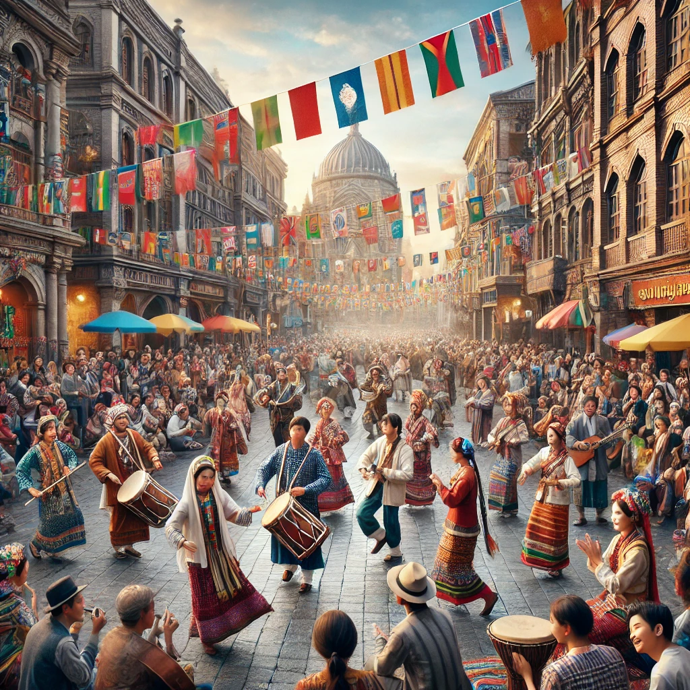
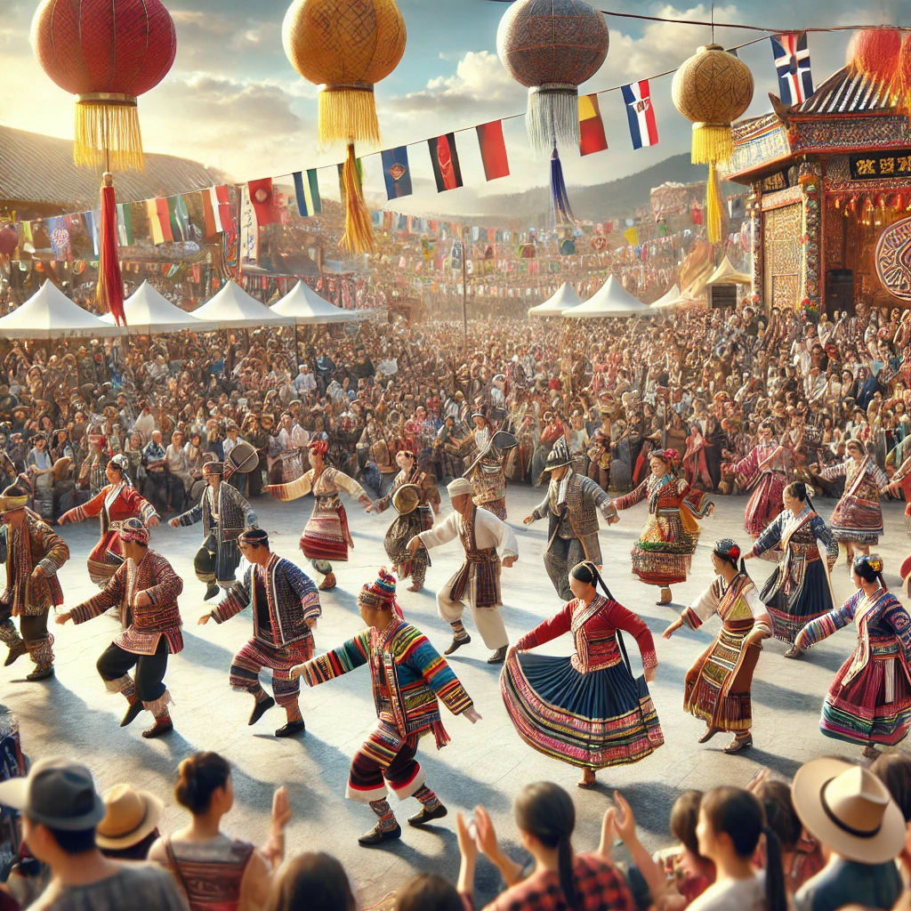
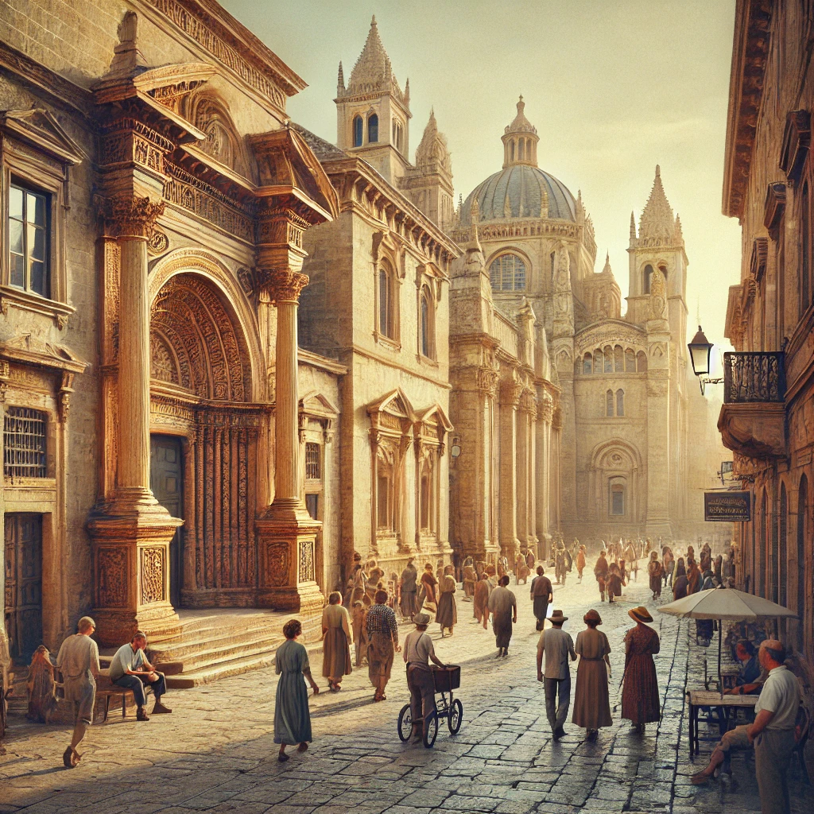

Свързваме светове чрез култура
Открийте богатството на традициите и обичаите по света.
Културни символи и обичаи

Традиционните танци събират общностите по света.

Фестивалите отразяват историята и духа на културите.

Архитектурата разказва историята на поколенията.